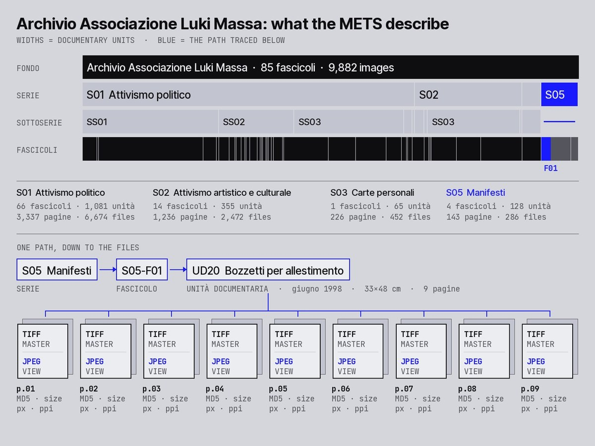
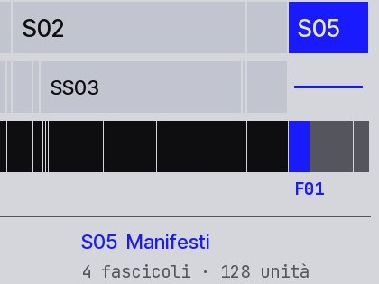
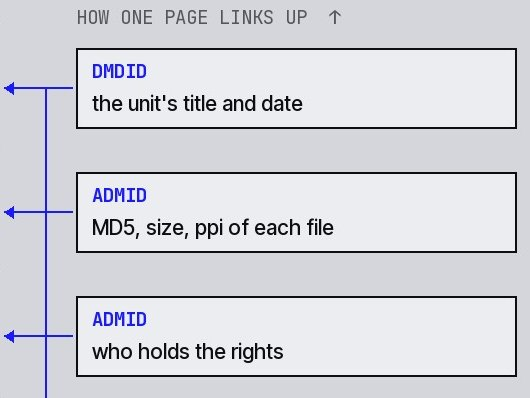
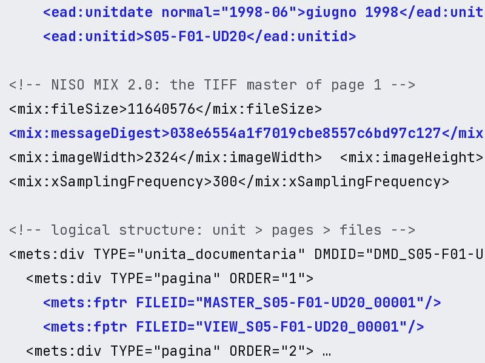
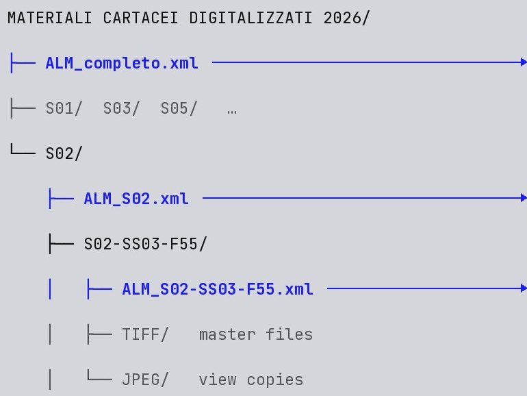
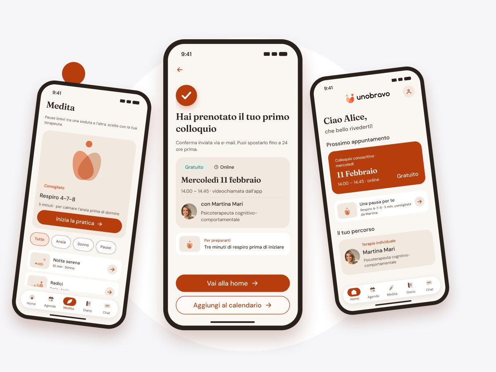
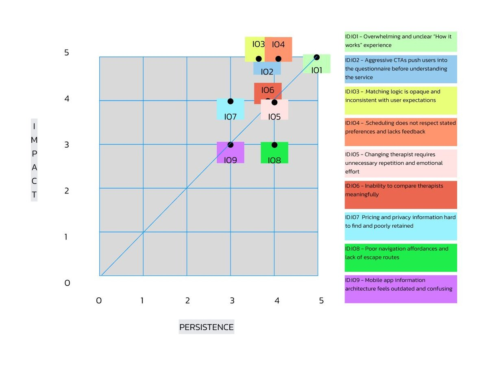

Candidates for the two homepage pictures you did not like. Each one is shown as a card and, below it, at the size it takes behind its skill in the hero map (260 x 172). The first figure in each group is the current picture, for comparison. Pick one per project by its code; any of them can also take the grey grade.
Luki Massa: Digital archives, In progress

Now the current picture

L1 The archive as bars: series S02 and S05, subseries, fascicoli, the traced path in blue

L2 How one page links up inside a METS record

L3 A real record: EAD3 unit, NISO MIX checksum, file pointers

L4 Three levels of METS files, each stored next to what it describes
Unobravo: User research, Selected work

Now the current picture

U1 Research: the urgency matrix (impact x persistence of each issue)